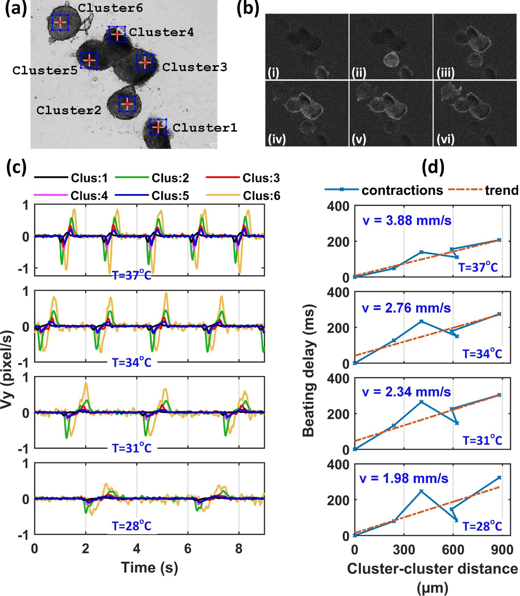
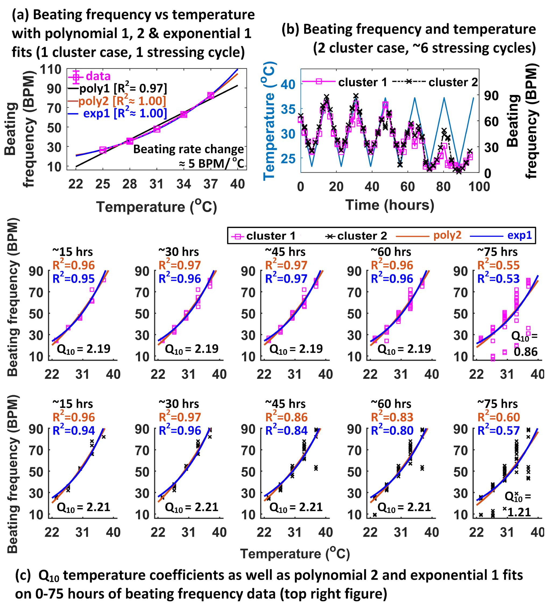
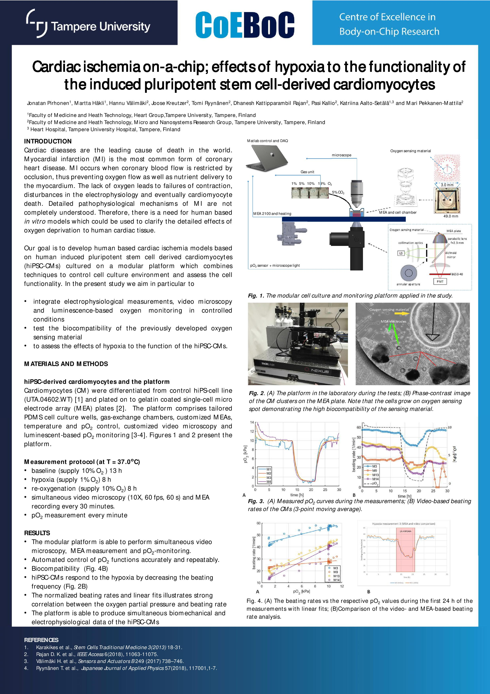

Optics and Biomedical engineering
Software development
Publications
Cardiomyocytes: Analysis of temperature response (Conclusion: Non linear relationship between beating rate and temperature)
Effect of temperature on hiPSC-cardiomyocyte function. Analysed beating signals at three selected temperatures as an overlay on the corresponding movies. Here one can see how the temperature affects the beating frequency (BF), contraction time (CT), relaxation time (RT), and relaxed time (RxT-the time between relaxation and contraction)
Contractile synchronization of dissociated HiPSc-Cardiomyocytes clusters
Contractile synchronization of dissociated hiPSC-CM clusters. (a) Six beating clusters where the blue rectangles show their movement centres analysed with CMaN. The action potential (AP) signal propagation between dissociated clusters became observable in the original movie by image processing. See the movie (right side) . (b) Selected frames from Supplementary material 3, where a passing brighter halo displays the AP propagation. The networking dynamic sequence starts from cluster 1 and advances up to cluster 6. (c) Beating signals from the six clusters where the time delay between the signals is clear. (d) The time delay versus the cluster separation distance (cluster 1/2/3/4/5/6 - cluster 1) plots and the computed AP propagation velocities.


The hiPSC cardiomyocytes beating frequency in long-term temperature stressing experiments. The data are from automated temperature cycles of decreasing (37 oC to 25 oC) and increasing (25 oC to 37 oC) temperatures in 3 oC steps. (a) Data from a representative single stressing cycle with linear and nonlinear (polynomial 2 and exponential 1) fits. Compared to linear fit, the nonlinear functions showed nearly perfect (R2 ≈1) fits here. (b) Beating frequencies of two clusters in about 100 hours of temperature stressing experiment. (c) Data (shown in upper right figure) rearranged into different time segments, with polynomial 2 and exponential 1 fits. The computed Q10 temperature coefficients are shown on each figure. The Q10 values are larger than 2 (in 0–60 hours) indicating a strong temperature dependence on hiPSC-CM function. The goodness of fit changes over culture time and drops significantly after 60 hours of culture.
Play video
Visualisation of AP propagation between dissociated clusters. For better visualisation the video speed is reduced to one third of the original speed.the computed AP propagation velocities.
Article link
Article video link
